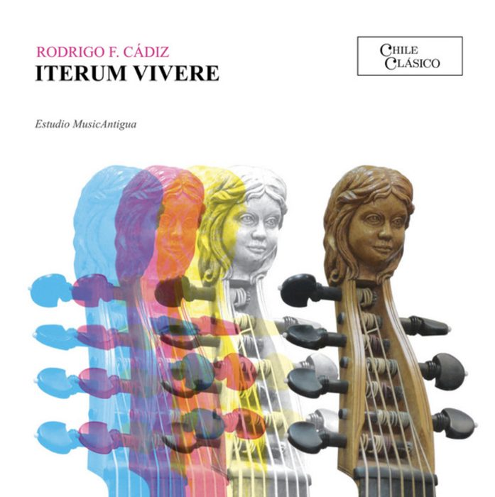
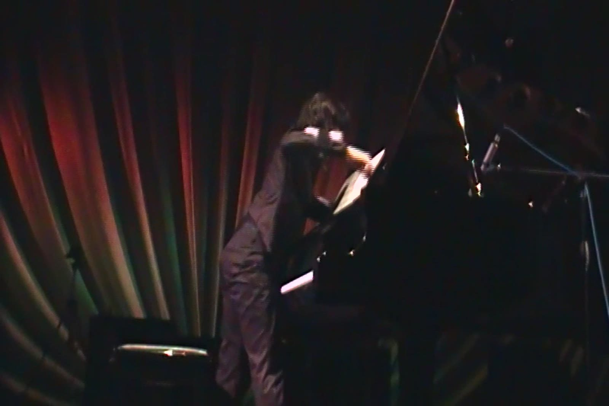

CatalogueCatálogo
Violas da gamba, harpsichord and early music ensemble with live electronicsViolas da gamba, clavecín y ensemble de música antigua con electrónica en vivo
Violas da gamba, harpsichord and early music ensemble with live electronics. Collected on Iterum Vivere (Chile Clásico, 2024).
Violas da gamba, clavecín y ensemble de música antigua con electrónica en vivo. Reunidas en Iterum Vivere (Chile Clásico, 2024).
← → · Esc← → · Esc
Early instruments & electronicsInstrumentos antiguos y electrónica
Violin and two violas da gambaViolín y dos violas da gamba · 2023 · 08:00
Early instruments & electronicsInstrumentos antiguos y electrónica
Computer music, 8 channelsMúsica computacional, 8 canales · 2022 · 10:00
Early instruments & electronicsInstrumentos antiguos y electrónica
Early music ensambleEnsemble de música antigua · 2022 · 15:00

Early instruments & electronicsInstrumentos antiguos y electrónica
Harspichord and computerClavicordio y electronica · 2005 · 13:00